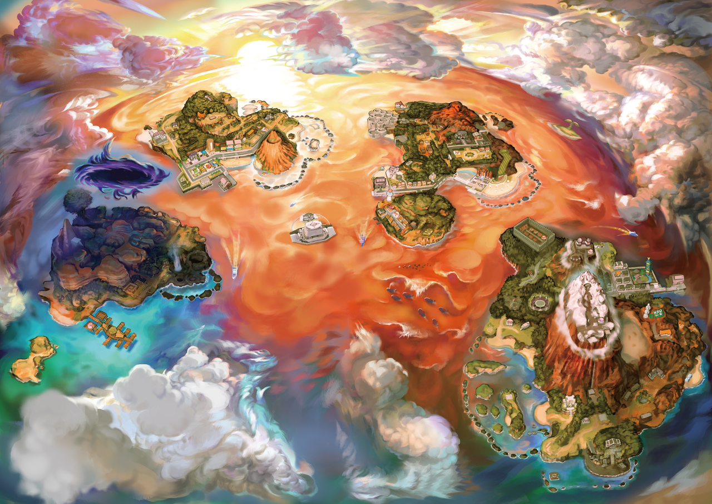

Alola Map
Rowlet (Japanese: モクロー Mokuroh) is a dual-type Grass/Flying Pokémon introduced in Generation VII. It evolves into Dartrix starting at level 17, which evolves into Decidueye starting at level 34. Along with Litten and Popplio, Rowlet is one of three starter Pokémon of Alola available at the beginning of Pokémon Sun, Moon, Ultra Sun, and Ultra Moon. It also acts as one of the three starters for the Hisui region in Legends: Arceus alongside Cyndaquil and Oshawott. Along with Litten and Popplio, it was the second Generation VII Pokémon to be revealed to the public on May 10, 2016.
Rowlet is a small, avian Pokémon resembling a young owl with a round body and short legs. Its plumage is primarily beige with a white underside and facial disc. The facial disc itself is in the shape of two overlapping circles. It has large black eyes and a stubby beak. The top part of its beak is white, while the lower half is orange-brown. Its feet have two forward-facing toes and one backward-facing toe; they are the same color as the lower half of its beak. Two leaves sprout from its chest arranged to resemble a bowtie. Additional leaves form its tail and line the undersides of its wings. A nocturnal Pokémon, it stores energy during the day through photosynthesis. It approaches opponents by silently gliding, before unleashing a volley of kicks. This Pokémon is able to rotate its head almost 180 degrees and has excellent night vision.[1] Its feathers are as sharp as blades, which it launches at foes from the air. Rowlet feel most relaxed in tight, dark spaces.